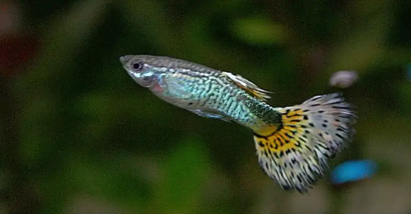

Mengenal Ikan Guppy

Ikan guppy, atau yang juga dikenal sebagai Poecilia reticulata, adalah salah satu ikan air tawar paling populer di dunia aquascape dan akuarium hias. Dikenal dengan warna-warni yang mencolok dan pola ekor yang unik, ikan guppy telah menjadi favorit para penggemar akuarium sejak abad ke-19. Tidak hanya indah dipandang, tetapi ikan guppy juga mudah dipelihara, menjadikannya pilihan sempurna bagi pemula yang ingin memulai hobi akuarium mereka sendiri. Meskipun ikan guppy terkenal sebagai ikan yang mudah dipelihara, perawatan yang baik tetap penting untuk menjaga kesehatan ikan-ikan kecil ini. Dalam artikel ini, akan dibahas fakta menarik seputar ikan guppy dan cara memeliharanya dengan benar, Ikan guppy, yang memiliki nama ilmiah Poecilia reticulata, adalah salah satu spesies ikan air tawar yang paling populer di dunia. Ikan ini berasal dari Amerika Selatan, khususnya Venezuela. Ikan ini telah menjadi salah satu ikan hias favorit para penggemar akuarium sejak pertengahan abad ke-19. Salah satu hal yang paling mencolok dari ikan ini adalah keindahan warna dan pola tubuhnya. Mereka hadir dalam berbagai variasi warna, termasuk merah, biru, kuning, hijau, dan bahkan warna-warna berkilauan seperti permata. Selain itu, ikan ini juga memiliki berbagai pola ekor yang unik, seperti ekor pedang, ekor kipas, dan ekor berbentuk bunga. Kelebihan lain dari ikan ini adalah kemudahan dalam perawatannya. Secara alami, melansir dari Seriously Fish, ikan ini dapat beradaptasi di berbagai kondisi air dan iklim. Mereka adalah ikan yang sangat tahan terhadap berbagai kondisi akuarium, membuatnya cocok untuk pemula yang baru memulai hobi akuarium. Mereka juga bisa hidup dalam akuarium dengan ukuran yang relatif kecil dan memakan berbagai jenis pakan, termasuk pelet ikan dan makanan hidup seperti jentik-jentik nyamuk. Namun, perlu diingat bahwa kualitas air dan suhu harus dijaga dengan baik untuk menjaga kesehatan ikan hias ini. Salah satu hal menarik lainnya dari ikan guppy adalah kemampuan mereka untuk berkembang biak dengan cepat. Melansir dari AZ Animals, ikan betina dapat melahirkan puluhan anak-anak guppy setiap beberapa minggu, sehingga pemelihara ikan ini harus mempertimbangkan pengendalian populasi. Dalam dunia akuarium, ikan ini telah menjadi simbol daya tarik visual dan kemudahan perawatan. Mereka tidak hanya menambah keindahan dalam akuarium, tetapi juga memberikan pengalaman yang menarik bagi para penggemar ikan hias. Dengan beragam warna, pola, dan sifat yang menawan, ikan hias ini tetap menjadi salah satu spesies ikan air tawar yang paling dicari dan dinikmati oleh penggemar akuarium di seluruh dunia.
Jenis-jenis Ikan Guppy
Ikan guppy memiliki berbagai variasi warna dan pola yang membuatnya begitu populer di dunia. Berikut beberapa jenis ikan guppy terpopuler yang sering dicari oleh para penggemar akuarium:
Guppy Cobra
Ikan ini dikenal karena memiliki pola ekor yang mirip dengan motif cobra snake, dengan garis-garis yang mencolok dan kontras. Varian ini sangat menarik dan biasanya hadir dalam berbagai warna yang mencolok.Guppy Moskow
Guppy Moskow terkenal karena warna tubuhnya yang cerah, seperti merah, biru, atau hijau, dengan kombinasi yang indah dengan ekor berbentuk pedang. Warna merah Moskow sangat populer di kalangan penggemar.
Guppy Tuxedo
Guppy Tuxedo memiliki warna tubuh yang dominan dengan ekor yang lebih gelap, seperti mengenakan setelan jas. Varian ini memiliki daya tarik yang elegan dan mewah. Guppy Metalik Jenis guppy ini memiliki kilau metalik yang mencolok pada tubuhnya. Warna-warna metalik seperti emas, perak, atau platinum sangat menawan dan membuatnya menjadi pusat perhatian di dalam akuarium.
Guppy Mosaik
Jenis guppy mosaik memiliki warna tubuh yang dipenuhi dengan bintik-bintik atau mosai, memberikan tampilan yang unik dan menarik. Jenis ini hadir dalam berbagai warna dan pola mosaik yang berbeda.Guppy Koi
Guppy Koi memiliki tampilan yang mirip dengan ikan koi dengan pola warna yang mencolok seperti bintik-bintik, belang, atau corak seperti ikan koi pada tubuhnya.Guppy Berwarna Solid
Beberapa penggemar lebih suka guppy dengan warna tubuh solid, seperti merah, biru, atau kuning yang cerah. Jenis ini memiliki daya tarik sederhana yang elegan.Guppy Albino
Guppy Albino memiliki tubuh yang sepenuhnya transparan atau putih dan memiliki mata merah. Kontras antara mata merah dan warna tubuhnya yang cerah menciptakan tampilan yang unik.Guppy Grass
Jenis ini dikenal karena ekor yang sangat panjang, yang memberikan tampilan yang anggun dan menarik saat mereka berenang di dalam akuarium.Perlu diingat bahwa ikan guppy adalah spesies yang dapat berkawin silang dengan mudah, sehingga terdapat berbagai variasi dan hibrida.